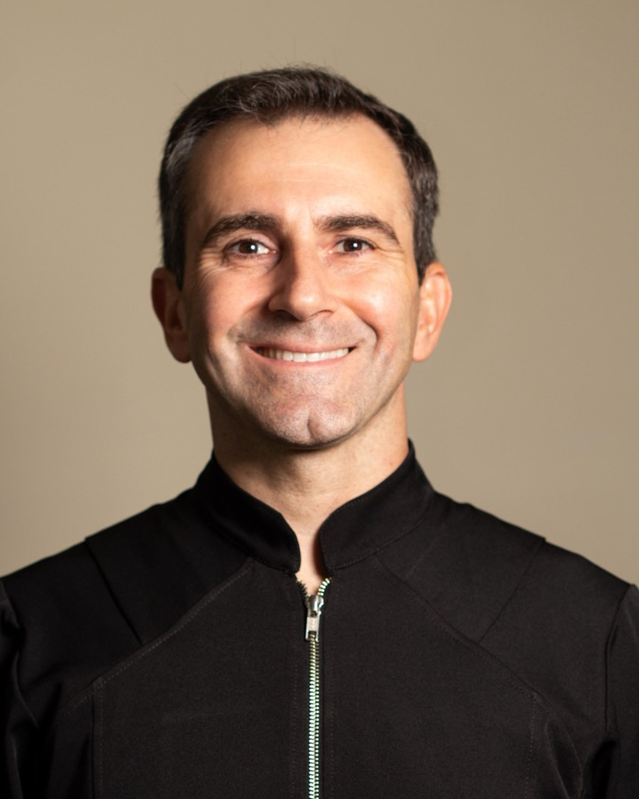

O sorriso que você sempre sonhou, com cuidado e tecnologia.
Ortodontia especializada para transformar sua autoestima e saúde bucal.

Sobre Mim
Thiago Luiz Grossi
Especialista em Ortodontia | Alinhadores e Ortodontia Convencional
Sou Thiago Grossi, dedicado a transformar sorrisos com ética, qualidade e atenção às suas necessidades. Graduado em Odontologia pela UFN-RS e especialista em Ortodontia pela ABO-RS, estou aqui para oferecer o melhor cuidado para você.
Tratamentos Oferecidos
Clique sobre um tratamento para saber mais
Ortodontia
Correção da posição dos dentes e maxilares para um sorriso alinhado e uma mordida correta.
Saiba maisInvisalign
Tratamento discreto e confortável com placas transparentes feitas sob medida.
Saiba maisAparelho Fixo
A solução tradicional e altamente eficaz para um alinhamento perfeito.
Saiba maisClareamento Dental
Deixe seus dentes mais brancos e brilhantes com nossas técnicas seguras e eficazes.
Saiba maisClínica Geral e Prevenção
Revisões, exames e limpezas para manter sua saúde bucal em dia e prevenir problemas.
Saiba maisRestauração de Dentes
Recuperação de dentes afetados por cáries, fraturas ou desgastes, devolvendo forma e função.
Saiba maisLaser de Baixa Potência
Tecnologia inovadora para alívio da dor, aceleração da cicatrização e redução de inflamações.
Saiba maisPronto para transformar o seu sorriso?
Entre em contato e dê o primeiro passo. Estou aqui para ajudar você a alcançar a confiança e a saúde bucal que merece.
R. Antônio Carlos Berta, 475 - Sl 606, Jardim Europa, Porto Alegre - RS, 91340-020 Ver no mapa